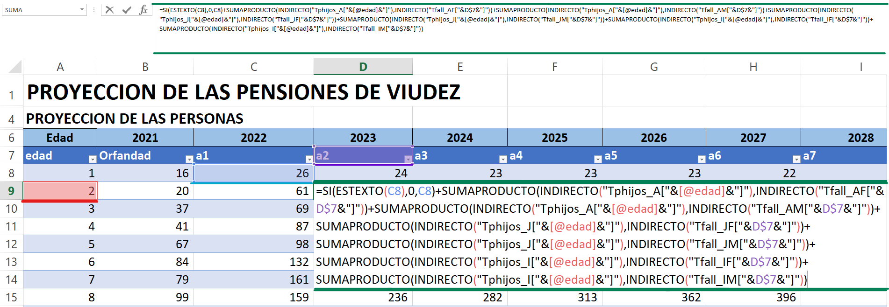
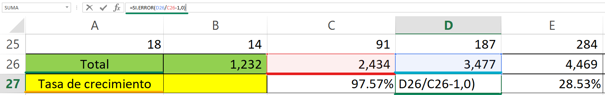
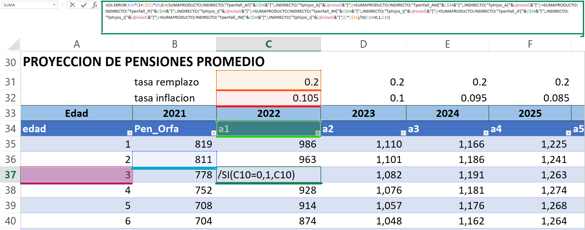
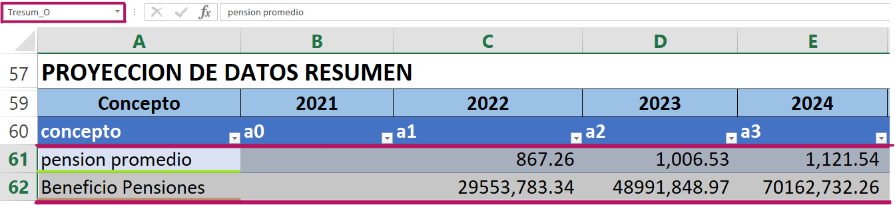

12 Orfandad
12.1 [Orfandad]
En esta tabla se encuentra información sobre la cantidad de huérfanos que se espera a lo largo de los años proyectados, también información sobre los montos de pensiones que se conceden por orfandad, un resumen de todos estos datos estimados, y otras proyecciones que son relevantes para el análisis, las cuales se describen a continuación:
12.1.1 Proyección de las personas
A esta tabla en general se le ha llamado “Torfandad” recordando que las edades para orfandad están entre los 1 y los 18 años, dentro de las Proyecciones por años llamados [a1-a100] estos datos representan las cantidades de huérfanos proyectados que se realizan en el estudio, para este análisis se hace uso de la siguiente formula:
\[\begin{align*} {CanH}_{i,j} & = {CanH}_{i-1,j-1} \nonumber \\ &+ \sum_{x=18}^{110}{{pha}_{i,x}}\times{Mue_Y}_{x,j}\nonumber \\ &+ \sum_{x=18}^{110}{phJ}_{i,x}\times Mue{J_Y}_{x,j} \\ & + \sum_{x=18}^{110}{{phI}_{i,x}\times{MueI_Y}_{x,j}} \end{align*}\]Donde:
\({CanH}_{i,j}\) = cantidad de huérfanos de edad i en el año j.
\({CanH}_{i-1,j-1}\) = cantidad de huérfanos de edad i-1 en el año anterior.
\(Mu{e\_Y}_{x,j}\) = cantidad de afiliados activos de género Y que fallecen a la edad x en el año j.
\(Mu{eJ\_Y}_{x,j}\) = cantidad de jubilados de género Y que fallecen a la edad x en el año j.
\(Mu{eI\_Y}_{x,j}\) = cantidad de afiliados inválidos de género Y que fallecen a la edad x en el año j.
\({pha}_{x,i}\) = probabilidad de que un activo a la edad x tenga hijos de edad i.
\({phJ}_{i,x}\) = probabilidad de que un jubilado a la edad x tenga hijos de edad i.
\({phI}_{i,x}\) = probabilidad de que un inválido a la edad x tenga hijos de edad i.
Lo antes descrito es una igualdad a la fórmula 6.3.1 y 6.3.2 Cantidad de afiliados en estado de invalidez por edad y Cantidad de afiliados en estado de invalidez que fallecen respectivamente y que se encuentra en (Nota Técnica de Proyección de Flujos del Régimen del Seguro de Previsión Social, a diciembre 2020):

12.1.2 Tabla Resumen
En esta sección se encuentra un resumen de información relevante entre ellas, el total de viudas por año proyectado, el porcentaje de crecimiento que se estima a lo largo de los años entre otras, a continuación se describen a detalle cada una de estas:
- \([Total]\) representa la suma de todos los huérfanos proyectados por año.
- \([Tasa\ de\ crecimiento]\) representa la tasa de crecimiento poblacional en cuanto a huérfanos proyectados relacionados con el año anterior y el presente, para ello se hace uso de la siguiente formula

12.1.3 Proyección de Pensiones Promedio
Esta tabla llamada “Tpenorfa” contiene las proyecciones del monto de pensiones otorgadas a huérfanos por año y por edad, para dicho cálculo se toma en cuenta la tasa de reemplazo y la tasa de inflación.
Para el primer año del análisis \([Pen\_Orfa]\), se busca en la tabla “Datos_Ini” de la hoja \([Entrada\ Datos]\) el valor de la pensión promedio de orfandades. Para el resto de los años proyectados \([a1-a100]\), se hace uso de la fórmula 8.3.2 Pensión por orfandad que se encuentra en (Nota Técnica de Proyección de Flujos del Régimen del Seguro de Previsión Social, a diciembre 2020):
\[\begin{align} {PenH}_{i,j} = \nonumber \\ & PenH_{i-1,j-1} \times \left ( 1+tinf\_real_j \right ) \times CanH_{i-1,j-1}+ \nonumber \\ & \sum_{x=18}^{110}{{pha}_{i,x}}\times{TMue_Y}_{x,j} + \sum_{x=18}^{110}{phJ}_{i,x}\times TMue{J_Y}_{x,j} \nonumber \\ &\underline{ + \sum_{x=18}^{110}{{phI}_{i,x}\times{TMueI_Y}_{x,j}} \times tremp\_orfa \hspace{2.8 em}}\nonumber \\ & \hspace{8.5 em} {CanH}_{i,j} \end{align}\]Donde:
\({PenH}_{i,j}\) = pensión promedio de huérfanos de edad i en el año j.
\({PenH}_{i-1,j-1}\) = pensión promedio de huérfanos de edad i-1 en el año anterior.
\({CanH}_{i-1,j-1}\) = cantidad de huérfanos de edad i-1 en el año anterior.
\(TMu{e_Y}_{x,j}\) = cantidad total de pensiones para activos de género Y que fallecen a la edad x en el año j.
\(TMu{eJ_Y}_{x,j}\) = cantidad total de pensiones para jubilados de género Y que fallecen a la edad x en el año j.
\(TMu{eI_Y}_{x,j}\) = cantidad total de pensiones para inválidos de género Y que fallecen a la edad x en el año j.
\({pha}_{x,i}\) = probabilidad de que un activo a la edad x tenga hijos de edad i.
\({phJ}_{i,x}\) = probabilidad de que un jubilado a la edad x tenga hijos de edad i.
\({phI}_{i,x}\) = probabilidad de que un inválido a la edad x tenga hijos de edad i.
\(tremp_{orfa}\) = porcentaje de transferencia de pensión a cada huérfano.
\({tinf_real}\_j\) = porcentaje de transferencia de pensión a cada huérfano.

12.1.4 Resumen de Proyección de datos
En esta tabla se realiza un resumen de las contribuciones y ayudas que reciben los huérfanos, a esta tabla se le ha llamado “Tresum_o”. Para ello vemos a detalle cada uno de los parámetros involucrados en dicha tabla
- \([Pensión\ promedio]\) este parámetro contiene el promedio de las pensiones para huérfanos, para dicho cálculo se hace uso de la siguiente formula
Donde:
\({CanH}_{i,j}\) = cantidad de huérfanos de edad i en el año j.
\({PenH}_{i,j}\) = pensión promedio de huérfanos de edad i en el año j.
\(Total\_j\) = total de huérfanos en el año j.
- \([Beneficio\ pensiones]\) este parámetro contiene el total de beneficio por pensiones para viudas, fórmula similar a la fórmula 7.3.4 Pago total de pensiones por viudez al año, que se encuentra en (Nota Técnica de Proyección de Flujos del Régimen del Seguro de Previsión Social, a diciembre 2020)
Donde:
\({CanH}_{i,j}\) = cantidad de huérfanos de edad i en el año j.
\({PenH}_{i,j}\) = pensión promedio de huérfanos de edad i en el año j.
\({num\_pension}_j\) = número de pensiones en el año j.
